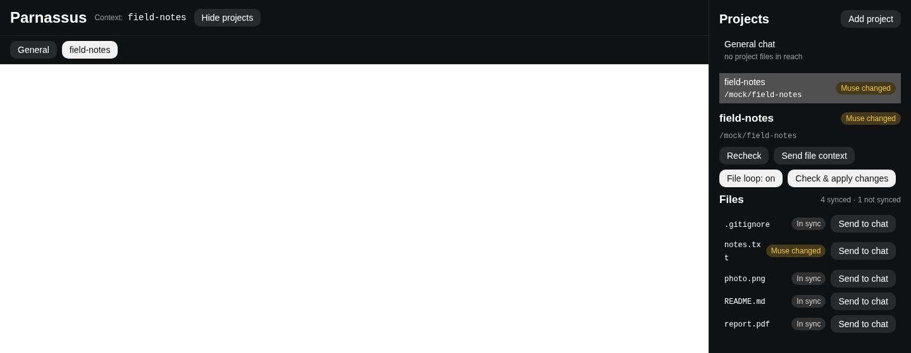
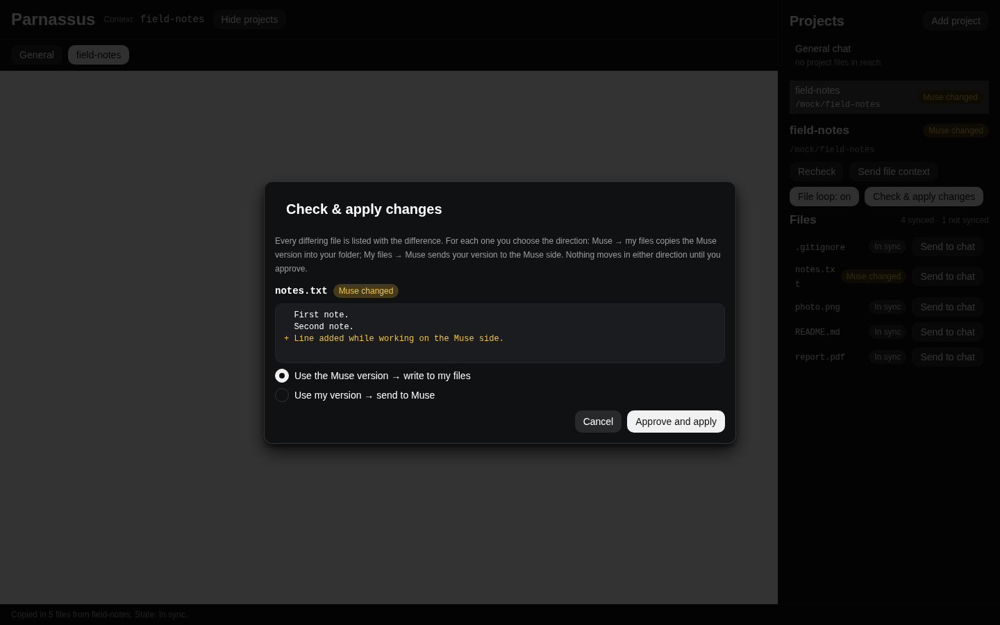

Parnassus
A desktop client for Muse. Your files stay in your folders, work happens on copies, and nothing is written back without your approval.
Context flows in — project description, file summaries, then full files on request through the file-request loop — and changes are reviewed before anything is written back. The return path is still simulated: Muse-side edits arrive as a marker line, not real agent changes yet. Linux only, unsigned, no auto-update; a new release here is the update channel.

The three ideas
- Owns nothing. The app stores no document content for itself. The staging area holds working copies you asked it to make; your originals are yours.
- The Airlock. Files move in exactly two ways, both explicit: copied in after you tick them in the scan, and written back only from the review dialog, one approval for the whole trip.
- Workspaces are the boundary. Each project is its own workspace and its own chat — isolated session, its own Muse thread named after the project — so a message never lands in the wrong project's reach.
How the chat gets your files
- First, a description pack: the project's goal, soul, memory, the folders its files live in, and a summary of each copied-in file.
- When the agent needs a file in full, it asks with one marker
line,
PARNASSUS_FILE_REQUEST: <path>, and that one file is sent into the chat. It can ask again — retrieval is a loop, not one huge prompt. - Goal, soul, decisions, and project memory live as plain markdown
in the project's own
.parnassusfolder, editable in any text editor.
